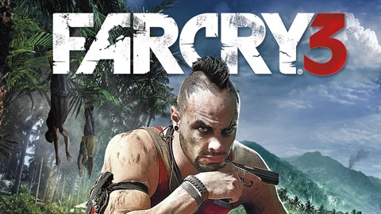
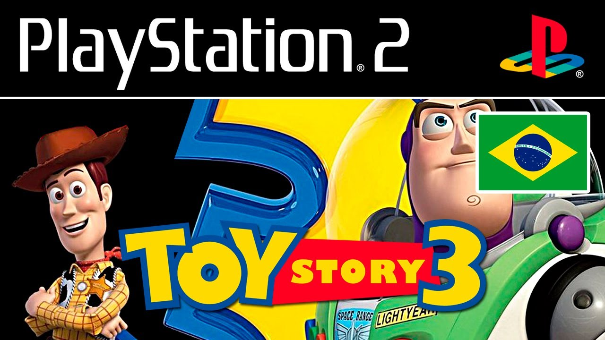

Far Cry 3 é um jogo eletrônico de tiro em primeira pessoa e mundo aberto de 2012 desenvolvido pela Ubisoft Montreal e publicado pela Ubisoft para PlayStation 3, Xbox 360 e Microsoft Windows. É a sequência do jogo Far Cry 2, lançado em 2008.


Cuphead é um jogo eletrônico de run and gun e plataforma criado pelos irmãos canadenses Chad e Jared Moldenhauer através da Studio MDHR. O jogo foi inspirado no estilo de animação Rubber hose usado em desenhos animados da Era de Ouro da animação americana, como o trabalho dos estúdios Fleischer Studios, Warner Bros.

Detroit: Become Human é um jogo eletrônico produzido pela Quantic Dream e publicado pela Sony Interactive Entertainment para o PlayStation 4 e Microsoft Windows PC.

Toy Story 3: The Game é um jogo baseado no filme Toy Story 3. É publicado pela Disney Interactive Studios e desenvolvido por Avalanche Software. O jogo foi lançado na América do Norte em 15 de junho de 2010.